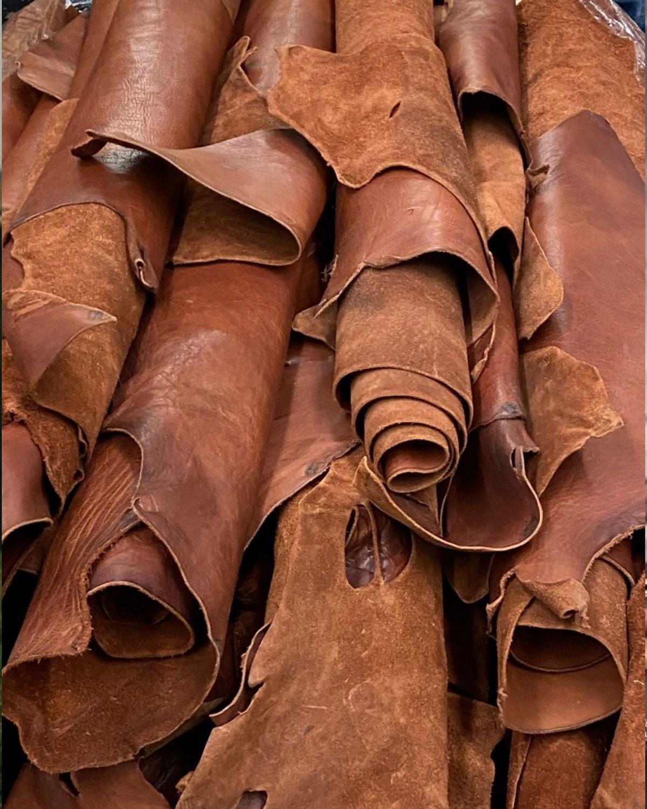
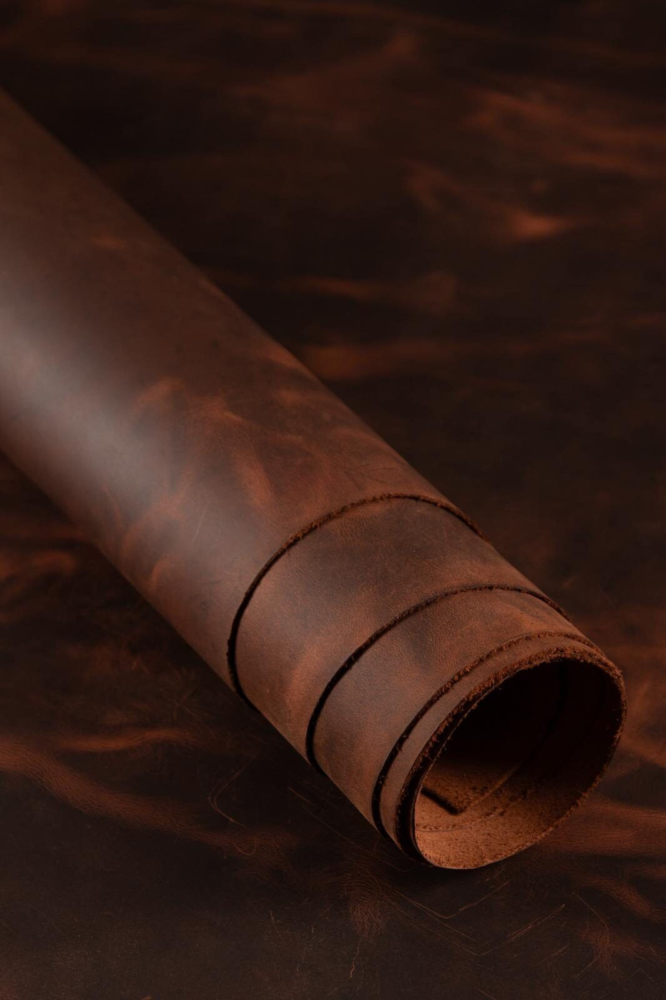

PROMOCIÓN ESPECIAL: 40% DE DESCUENTO en todo el catálogo • Cuero 100% Genuino Hecho a Mano por Jhon Paredes • Envíos a todo el Perú
Creamos piezas únicas en cuero legítimo trabajadas a mano con paciencia, tradición y acabados de primera calidad pensados para acompañarte toda la vida.
Utilizamos cueros de grano entero y curtido vegetal que mejoran su belleza con el tiempo y el uso diario.
Cada corte, biselado y costura es ejecutado con maestría y paciencia por Jhon Paredes • El Artesano, garantizando acabados de máxima precisión y carácter único en cada pieza.
Embalaje protector y envíos coordinados con seguimiento directo hasta la puerta de tu hogar.
Selecciona tu producto favorito, explora sus especificaciones y pídelo al instante por WhatsApp.

Cuero Vacuno Curtido
Primera FlorEn Calato Leathers creemos que los objetos cotidianos deben contar una historia. A diferencia de los materiales sintéticos que se deterioran con rapidez, el cuero genuino desarrolla una pátina única con el tiempo que resalta sus vetas y tonalidades naturales.
Revisamos minuciosamente cada piel asegurando el grosor, flexibilidad y textura adecuados.
Cada pieza se corta con precisión y se preparan sus bordes con técnicas tradicionales de acabado.
El cosido a mano garantiza una resistencia infinitamente superior a cualquier máquina industrial.
En Calato Leathers, cada creación es obra del artesano Jhon Paredes. Inspirados en el perro sin pelo "Calato" —símbolo ancestral peruano de nobleza, resistencia y autenticidad sin artificios—, trabajamos el cuero legítimo con técnicas tradicionales de corte y costura manual.
No somos una producción en masa: cada billetera recibe el tiempo, la paciencia y el esmero que exige una auténtica obra hecha a mano en Perú, diseñada para acompañarte y envejecer con carácter toda la vida.
Pide fácilmente tus artículos favoritos. Te respondemos de inmediato.
La forma más rápida de comprar, resolver dudas y coordinar envíos.
Chatear al +51 915 222 623Conoce los procesos del taller, armado a mano y nuevas creaciones.
@CALATOPERUVIANLEATHERTransferencias bancarias (BCP, BBVA, Interbank), Yape, Plin y efectivo.
Pagos 100% Seguros